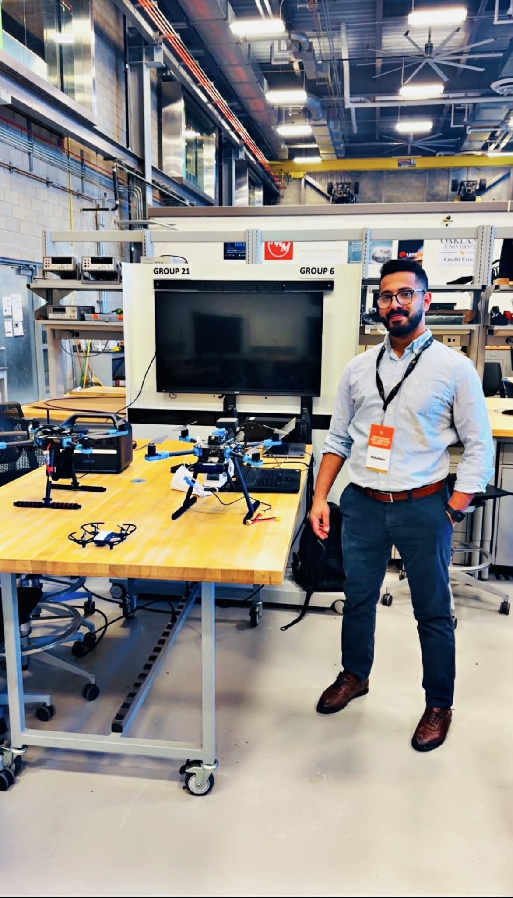
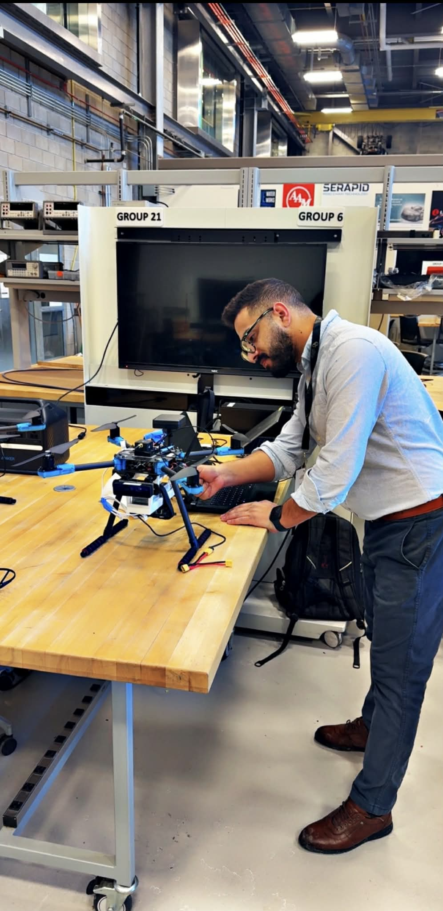
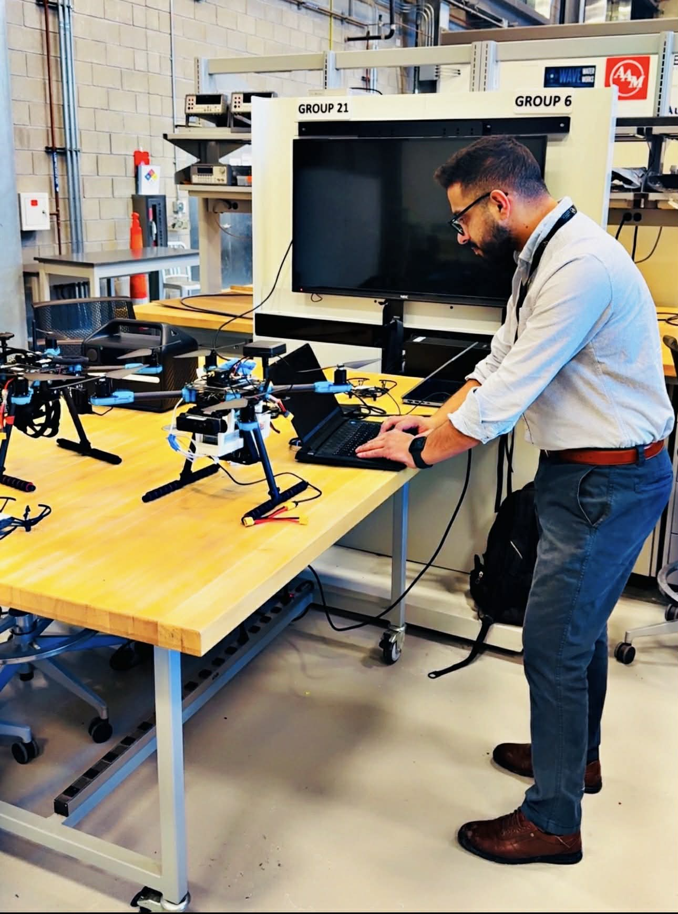

01
Memory-Poisoning Attacks on LLM Agents
Persistent vector memory is the new privilege boundary. I show how a single poisoned reflection can redirect a multi-agent UAV mission — and persist across sessions.
Oakland University · PhD Researcher · AI Security Lab
I'm Ibrahim Odat — an AI security researcher breaking and defending the next generation of large-language-model–powered multi-agent UAV fleets. My work bridges adversarial machine learning, autonomous robotics, and offensive security to harden the systems that will soon fly, drive, and defend.

I'm a PhD researcher at Oakland University advised by Dr. Anyi Liu, working at the intersection of adversarial machine learning and autonomous systems security. My current work identifies memory as a novel control-plane attack surface in LLM-based multi-agent UAV systems — introducing the first documented threat model in this space and a defense pipeline that drops measured attack success from 100% to 0% in controlled evaluation.
Before the PhD, I earned an M.S. in Cybersecurity (GPA 4.0/4.0) and contributed to Net-GPT — one of the first peer-reviewed demonstrations of LLM-enabled attacks against UAV communications (IEEE/ACM SEC 2023). The paper is now cited by independent researchers across 10+ countries and has been extended to smart-grid, robotic, and flying-network domains.
I also build. From AeroMind, the multi-agent UAV testbed underpinning my RAID 2026 submission, to penetration-testing frameworks for PX4 Autopilot — I ship research artifacts the community can actually run.
My program connects attacks on LLM agents, defenses for autonomous robotics, and reproducible artifacts for the research community.
Persistent vector memory is the new privilege boundary. I show how a single poisoned reflection can redirect a multi-agent UAV mission — and persist across sessions.
Net-GPT demonstrated that fine-tuned language models can forge MAVLink traffic with 95.3% accuracy — enabling automated MITM on drone ↔ ground-station links.
PX4 Autopilot pen-testing, MAVLink session hijacking, and a three-layer defense pipeline — turned into reproducible testbeds the community can build on.
29th International Symposium on Research in Attacks, Intrusions and Defenses (RAID 2026) · Submission #452 · Springer LNCS
IEEE Conference on Mobility: Operations, Services & Technologies · pp. 229–230
25th IEEE International Conference on Machine Learning and Applications · Oakland University · Oct 5–7, 2026
Multi-agent UAV security testbed. Supervisor agent + autonomous scouts + persistent vector memory for evaluating memory poisoning, cross-agent propagation, and retrieval-stage defenses.
Reference implementation for the IEEE/ACM SEC 2023 paper. Fine-tuned LLM pipeline for generating counterfeit MAVLink traffic — the public codebase independent researchers have extended to new domains.
Oakland University · Engineering Center. Hands-on work with PX4 flight controllers, multi-rotor testbeds, and the AeroMind multi-agent fleet.


Open to research collaborations, industry partnerships, and invited talks on LLM & UAV security.